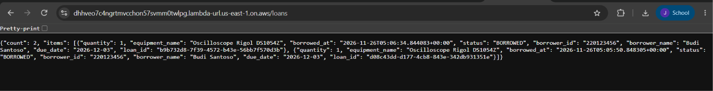
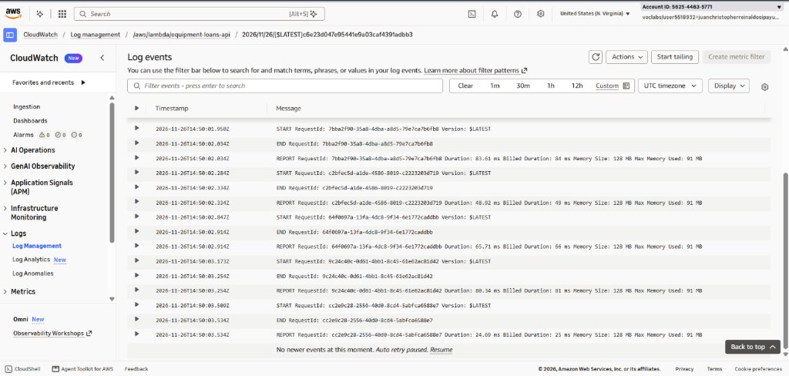
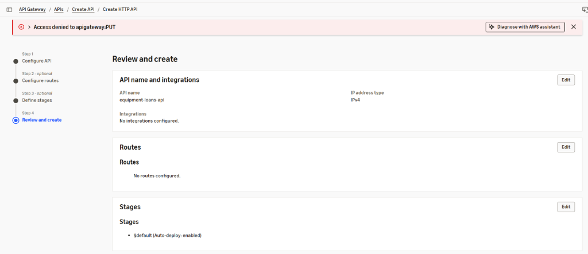

| Nama / NIM | Juan Christopher Reinaldo Sipayung (24/544528/TK/60526) |
| Mata Kuliah | AWS Cloud Computing — Individual Project (Week 12) |
| Use Case | Equipment Loans API (Sistem Peminjaman Alat Laboratorium) |
| Track | Track C — Serverless (Lambda Function URL + AWS Lambda + Amazon DynamoDB) |
| Region & Lingkungan | us-east-1 (US East / N. Virginia) — AWS Academy Learner Lab |
| Git Repository | https://github.com/juancrcr/Project-aws |
Alur request dan data dari klien hingga penyimpanan dijelaskan secara berurutan sebagai berikut:
Lambda Function URL pada rute /health, /loans, atau /loans/{loan_id}.equipment-loans-api (runtime Python 3.12) untuk routing dan validasi input.LabRole yang memiliki izin operasional ke DynamoDB dan CloudWatch Logs di us-east-1. Saat GET /health dipanggil pertama kali setelah sesi sandbox dimulai, Lambda otomatis memeriksa dan membuat tabel DynamoDB equipment-loans apabila belum tersedia.PutItem, Scan, GetItem, UpdateItem, DeleteItem) ke tabel DynamoDB melalui SDK boto3 di atas koneksi TLS, lalu mengembalikan respons JSON berformat standar ke client./aws/lambda/equipment-loans-api.Pada rancangan referensi Track C Serverless, lapisan pintu masuk HTTP umumnya menggunakan Amazon API Gateway. Namun, pada lingkungan AWS Academy Learner Lab, sesi pengguna berjalan menggunakan assumed-role voclabs yang dibatasi oleh kebijakan IAM sandbox. Pembuatan HTTP API maupun REST API ditolak oleh AWS baik melalui konsol web (Access denied to apigateway:PUT) maupun melalui AWS CLI (AccessDeniedException pada aksi apigateway:POST), sebagaimana dibuktikan pada Bukti 9.
Untuk mengatasi batasan tersebut tanpa keluar dari arsitektur serverless, dilakukan evaluasi terhadap opsi eksposur fungsi Lambda yang tersedia di AWS:
| Opsi Layanan | Status di Learner Lab | Evaluasi Teknis & Biaya | Keputusan |
|---|---|---|---|
| Amazon API Gateway (HTTP / REST API) | Diblokir (apigateway:POST & apigateway:PUT ditolak) | Mendukung manajemen rute tingkat lanjut, throttling, dan authorizer, namun tidak dapat dibuat oleh role voclabs. | Tidak dapat dipakai langsung di sandbox (tetap didukung sebagai opsi utama di script). |
| AWS Lambda Function URL | Diizinkan penuh (lambda:CreateFunctionUrlConfig) | Endpoint HTTPS bawaan Lambda, gratis (hanya bayar invokasi Lambda), mendukung CORS dan payload format v2.0 yang identik dengan API Gateway HTTP API. | DIPILIH sebagai endpoint publik utama di sandbox. |
| Application Load Balancer (ALB) + Lambda Target | Diizinkan terbatas | Membutuhkan konfigurasi VPC, minimal dua public subnet, dan Security Group, serta mengenakan biaya sewa per jam yang menguras kredit lab. | Tidak dipilih karena tidak murni serverless & boros kredit. |
AWS CLI / SDK Direct Invoke (aws lambda invoke) | Diizinkan | Tidak menyediakan URL HTTP standar sehingga tidak dapat diakses langsung oleh browser atau klien REST umum tanpa kredensial AWS. | Hanya dipakai untuk pengujian internal, bukan endpoint API. |
Berdasarkan evaluasi di atas, AWS Lambda Function URL dipilih karena paling sesuai dengan prinsip serverless dan menggunakan format event v2.0 yang sama persis dengan API Gateway HTTP API. Script otomasi (scripts/setup-aws.ps1 dan scripts/setup-aws.sh) tetap mencoba membuat API Gateway terlebih dahulu, lalu otomatis melakukan fallback ke Lambda Function URL saat mendeteksi pembatasan sandbox sehingga kode dan script tetap portabel.
Karena arsitektur serverless tidak memiliki server yang dapat diakses melalui SSH, pemantauan dan audit operasional dilakukan melalui Amazon CloudWatch Logs pada grup log /aws/lambda/equipment-loans-api. Setiap request yang masuk ke Function URL menghasilkan rekaman terstruktur: START RequestId (awal eksekusi), END RequestId (akhir eksekusi), serta REPORT RequestId yang mencatat durasi eksekusi aktual (Duration), durasi penagihan (Billed Duration), kapasitas memori (128 MB), dan pemakaian memori puncak (~91 MB). Data ini memastikan konektivitas Lambda ke layanan manajemen log berjalan baik sekaligus memudahkan pelacakan error.
LabRole melalui kredensial sementara AWS STS untuk mengakses tabel equipment-loans dan menulis ke CloudWatch Logs.AuthType: NONE dan header CORS Access-Control-Allow-Origin: * agar endpoint CRUD dapat diverifikasi langsung dari browser dan skrip pengujian. Risiko utamanya adalah siapa pun yang mengetahui URL dapat memanggil endpoint tanpa autentikasi. Pada tahap pengembangan berikutnya, pengamanan ditingkatkan dengan mengaktifkan AuthType: AWS_IAM (AWS SigV4) atau token validasi di lapisan aplikasi, membatasi origin CORS, menetapkan batas reserved concurrency, serta mempersempit policy IAM khusus ke ARN tabel equipment-loans.Kasus penggunaan yang diangkat adalah Equipment Loans API, yaitu layanan pencatatan peminjaman dan pengembalian inventaris alat laboratorium (seperti oscilloscope, multimeter digital, dan perangkat jaringan) oleh mahasiswa maupun asisten praktikum. Beban kerja peminjaman alat laboratorium bersifat periodik (ramai saat jam praktikum dan hampir nol di luar jam kerja).
Dibandingkan Track A (EC2 + RDS MySQL) dan Track B (EC2 + Docker + ECR) yang mengharuskan penyediaan instance berjalan terus-menerus beserta pemeliharaan VPC/database, Track C (Serverless) dipilih karena tiga keunggulan utama: (1) skema bayar sesuai pemakaian (Lambda per invokasi dan DynamoDB mode On-demand) sehingga biaya mendekati nol saat tidak ada transaksi, (2) waktu provisi ulang di bawah 1 menit yang sangat krusial mengingat sesi AWS Learner Lab mengalami reset berkala sekitar setiap 3 jam, serta (3) tanpa beban administrasi OS maupun koneksi pool database relasional.
Seluruh data transaksi disimpan sebagai satu entitas utama EquipmentLoan pada tabel Amazon DynamoDB equipment-loans di region us-east-1 dengan partition key loan_id (String) dan mode kapasitas PAY_PER_REQUEST (On-demand):
| Atribut | Tipe | Wajib? | Keterangan & Aturan Domain |
|---|---|---|---|
loan_id | String | Otomatis (PK) | Partition key unik berupa UUID v4 yang dibangkitkan server saat POST /loans. |
borrower_name | String | Ya (POST) | Nama lengkap peminjam alat laboratorium (di-trim dari spasi berlebih). |
borrower_id | String | Ya (POST) | NIM atau nomor identitas peminjam. |
equipment_name | String | Ya (POST) | Nama dan tipe alat laboratorium yang dipinjam. |
quantity | Number | Ya (POST) | Jumlah unit alat yang dipinjam; wajib bilangan bulat >= 1. |
status | String | Otomatis / PUT | Bernilai awal BORROWED saat dibuat; dapat diperbarui ke RETURNED melalui PUT. |
borrowed_at | String | Otomatis | Waktu pencatatan peminjaman dalam format ISO 8601 UTC. |
due_date | String | Ya (POST) | Batas tanggal pengembalian alat dalam format YYYY-MM-DD. |
returned_at | String | Kondisional | Timestamp ISO 8601 UTC yang diisi otomatis oleh server ketika status berubah menjadi RETURNED. |
Empat operasi inti CRUD diimplementasikan penuh pada rute /loans, dilengkapi satu endpoint GET /health untuk verifikasi konektivitas Lambda dengan DynamoDB:
| Method | Path | Operasi | Status | Deskripsi Perilaku |
|---|---|---|---|---|
GET | /health | Health Check | 200 / 503 | Memeriksa status fungsi Lambda dan tabel DynamoDB (serta membuat tabel otomatis jika belum ada). |
POST | /loans | Create | 201 / 400 | Memvalidasi 5 field wajib & quantity >= 1, membuat UUID loan_id, menyimpan item berstatus BORROWED. |
GET | /loans | Read (List) | 200 | Mengambil seluruh daftar peminjaman beserta jumlah total item (count). |
GET | /loans/{loan_id} | Read (Detail) | 200 / 404 | Mengambil satu data peminjaman berdasarkan partition key loan_id. |
PUT | /loans/{loan_id} | Update | 200 / 400 / 404 | Memperbarui status (BORROWED/RETURNED), due_date, atau quantity; mengisi returned_at otomatis saat RETURNED. |
DELETE | /loans/{loan_id} | Delete | 200 / 404 | Memastikan item ada lalu menghapus data peminjaman dari tabel DynamoDB. |
Contoh kontrak JSON saat membuat data peminjaman baru:
// Request: POST /loans
{
"borrower_name": "Siti Aminah",
"borrower_id": "240544528",
"equipment_name": "Digital Multimeter Fluke 117",
"quantity": 2,
"due_date": "2026-12-05"
}
// Response: 201 Created
{
"message": "Loan created",
"item": {
"loan_id": "955eba62-9b78-46af-a1f1-2bb4b9d3237a",
"borrower_name": "Siti Aminah",
"borrower_id": "240544528",
"equipment_name": "Digital Multimeter Fluke 117",
"quantity": 2,
"status": "BORROWED",
"borrowed_at": "2026-11-26T14:50:01.634407+00:00",
"due_date": "2026-12-05"
}
}
Seluruh kode sumber, unit test, skrip otomasi infrastruktur, bukti pengujian, dan dokumentasi dikelola secara bertahap (progressive commits) pada repositori publik https://github.com/juancrcr/Project-aws. Komponen utama repositori meliputi:
README.md & requirements.txt: dokumentasi arsitektur, skema entitas, spesifikasi endpoint, contoh perintah curl, dan dependensi lokal.src/lambda_function.py: implementasi handler AWS Lambda Python 3.12 mencakupi routing event v2.0, validasi input, serialisasi Decimal DynamoDB, auto-create tabel, dan 4 operasi CRUD.src/local_test.py: rangkaian unit test offline menggunakan in-memory mock _FakeDynamoTable (3/3 pengujian lulus: health check, siklus CRUD lengkap Create→List→Get→Update→Delete→404, serta validasi input buruk) tanpa membutuhkan koneksi internet.scripts/setup-aws.ps1 & scripts/setup-aws.sh: skrip provisi ulang otomatis untuk Windows PowerShell maupun Linux/CloudShell Bash.scripts/save-evidence.ps1: skrip pengujian integrasi live yang mengeksekusi seluruh siklus CRUD ke endpoint AWS aktif dan mencadangkan isi tabel DynamoDB ke evidence/.docs/ & evidence/: diagram arsitektur, dokumen laporan (Laporan_Week12.docx dan Laporan_Week12.pdf), tangkapan layar konsol AWS (01–09), log hasil uji live, dan backup JSON DynamoDB.AWS_ACCESS_KEY_ID, AWS_SECRET_ACCESS_KEY, AWS_SESSION_TOKEN) ke sesi terminal dengan region us-east-1..\scripts\setup-aws.ps1 (atau bash scripts/setup-aws.sh). Skrip memverifikasi identitas STS, mengemas src/lambda_function.py menjadi ZIP, membuat/memperbarui fungsi Lambda equipment-loans-api dengan LabRole, mengaktifkan Function URL beserta izin akses publik, lalu memanggil GET /health untuk menginisialisasi tabel DynamoDB equipment-loans..\scripts\save-evidence.ps1 untuk menguji seluruh endpoint live (Create, Read List, Read by ID, Update ke RETURNED, Delete, dan verifikasi 404) serta menyimpan output dan hasil scan DynamoDB ke folder evidence/.Seluruh komponen telah diprovisikan dan diverifikasi secara langsung pada akun AWS Academy Learner Lab (Account ID 562544635771, region us-east-1). Tangkapan layar konsol awal (Bukti 1–7) diambil pada sesi pertama (https://dhhveo7c4ngrtmvcchon57svmm0twlpg.lambda-url.us-east-1.on.aws), kemudian infrastruktur dideploy ulang menggunakan skrip otomasi pada sesi berikutnya (https://77rrmmovdyzjfo7wajyowsvwcm0dmyus.lambda-url.us-east-1.on.aws) untuk mengambil bukti CloudWatch Logs, pembatasan API Gateway, dan siklus CRUD lengkap (Bukti 8–10). Hal ini sekaligus membuktikan bahwa arsitektur dan skrip provisi bersifat reproducible.

equipment-loans berstatus Active di region us-east-1 dengan partition key loan_id (String) dan mode kapasitas On-demand. Nilai Item count menampilkan 0 pada ringkasan metadata karena DynamoDB hanya memperbarui statistik tersebut sekitar setiap 6 jam; isi aktual tabel ditunjukkan pada Bukti 2.
equipment-loans menampilkan item peminjaman alat laboratorium yang berhasil ditulis oleh fungsi Lambda melalui endpoint POST /loans.
equipment-loans-api memperlihatkan Function ARN di us-east-1, endpoint HTTPS publik pada bagian Function URL, serta konfigurasi execution role LabRole.
equipment-loans-api memverifikasi bahwa IAM role LabRole aktif digunakan oleh Lambda untuk mengakses layanan AWS lain tanpa kredensial di dalam kode.
LabRole di konsol IAM menunjukkan daftar 4 policy terkelola yang terpasang dan memberikan hak eksekusi ke DynamoDB serta CloudWatch Logs.
{"status": "ok", "table": "equipment-loans", "table_status": "ACTIVE"}.
GET /loans melalui browser mengembalikan respons JSON daftar peminjaman dari DynamoDB.
/aws/lambda/equipment-loans-api merekam setiap invokasi dari rangkaian uji CRUD pada pukul 14:50:01Z–14:50:03Z (START, END, dan REPORT RequestId) dengan durasi eksekusi cepat antara 24,69 ms hingga 83,61 ms dan penggunaan memori maksimum 91 MB dari alokasi 128 MB.
Access denied to apigateway:PUT. Percobaan serupa melalui AWS CLI juga menghasilkan AccessDeniedException pada aksi apigateway:POST seperti tercantum di bawah ini, sehingga Lambda Function URL digunakan sebagai solusi endpoint.$ aws apigatewayv2 create-api --name "equipment-loans-http-api" --protocol-type HTTP --region us-east-1 An error occurred (AccessDeniedException) when calling the CreateApi operation: User: arn:aws:sts::562544635771:assumed-role/voclabs/user5518932=juanchristopherreinaldosipayung@mail.ugm.ac.id is not authorized to perform: apigateway:POST on resource: arn:aws:apigateway:us-east-1::/apis because no identity-based policy allows the apigateway:POST action
Rekaman lengkap dari file evidence/aws-evidence-20261126-214955.txt yang membuktikan seluruh operasi berjalan end-to-end terhadap infrastruktur AWS aktif: (1) GET /health, (2) POST /loans pembuatan data baru dengan status BORROWED, (3) GET /loans pembacaan daftar item, (4) GET /loans/{id} pembacaan detail satu item, (5) PUT /loans/{id} pembaruan status ke RETURNED yang otomatis mengisi atribut returned_at, (6) DELETE /loans/{id} penghapusan item, dan (7) verifikasi HTTP 404 Not Found saat item yang telah dihapus diakses kembali:
=== AWS LEARNER LAB EVIDENCE (20261126-214955) ===
Invoke URL : https://77rrmmovdyzjfo7wajyowsvwcm0dmyus.lambda-url.us-east-1.on.aws
--- 1. Health check (GET /health) ---
{
"status": "ok",
"table": "equipment-loans",
"table_status": "ACTIVE"
}
--- 2a. Create sample tetap (POST /loans) ---
{
"message": "Loan created",
"item": {
"loan_id": "9a9b8f20-1fed-49e8-9b49-49b7aceb179e",
"borrower_name": "Budi Santoso",
"borrower_id": "220123456",
"equipment_name": "Oscilloscope Rigol DS1054Z",
"quantity": 1,
"status": "BORROWED",
"borrowed_at": "2026-11-26T14:50:01.051205+00:00",
"due_date": "2026-12-03"
}
}
--- 2b. Create untuk siklus CRUD (POST /loans) ---
{
"message": "Loan created",
"item": {
"loan_id": "955eba62-9b78-46af-a1f1-2bb4b9d3237a",
"borrower_name": "Siti Aminah",
"borrower_id": "240544528",
"equipment_name": "Digital Multimeter Fluke 117",
"quantity": 2,
"status": "BORROWED",
"borrowed_at": "2026-11-26T14:50:01.634407+00:00",
"due_date": "2026-12-05"
}
}
--- 3. Read list (GET /loans) ---
{
"count": 2,
"items": [
{
"quantity": 1,
"equipment_name": "Oscilloscope Rigol DS1054Z",
"borrowed_at": "2026-11-26T14:50:01.051205+00:00",
"status": "BORROWED",
"borrower_id": "220123456",
"borrower_name": "Budi Santoso",
"due_date": "2026-12-03",
"loan_id": "9a9b8f20-1fed-49e8-9b49-49b7aceb179e"
},
{
"quantity": 2,
"equipment_name": "Digital Multimeter Fluke 117",
"borrowed_at": "2026-11-26T14:50:01.634407+00:00",
"status": "BORROWED",
"borrower_id": "240544528",
"borrower_name": "Siti Aminah",
"due_date": "2026-12-05",
"loan_id": "955eba62-9b78-46af-a1f1-2bb4b9d3237a"
}
]
}
--- 4. Read by id (GET /loans/955eba62-9b78-46af-a1f1-2bb4b9d3237a) ---
{
"item": {
"quantity": 2,
"equipment_name": "Digital Multimeter Fluke 117",
"borrowed_at": "2026-11-26T14:50:01.634407+00:00",
"status": "BORROWED",
"borrower_id": "240544528",
"borrower_name": "Siti Aminah",
"due_date": "2026-12-05",
"loan_id": "955eba62-9b78-46af-a1f1-2bb4b9d3237a"
}
}
--- 5. Update (RETURNED) (PUT /loans/955eba62-9b78-46af-a1f1-2bb4b9d3237a) ---
{
"message": "Loan updated",
"item": {
"due_date": "2026-12-05",
"borrowed_at": "2026-11-26T14:50:01.634407+00:00",
"status": "RETURNED",
"borrower_id": "240544528",
"loan_id": "955eba62-9b78-46af-a1f1-2bb4b9d3237a",
"returned_at": "2026-11-26T14:50:02.853727+00:00",
"equipment_name": "Digital Multimeter Fluke 117",
"quantity": 2,
"borrower_name": "Siti Aminah"
}
}
--- 6. Delete (DELETE /loans/955eba62-9b78-46af-a1f1-2bb4b9d3237a) ---
{
"message": "Loan deleted",
"loan_id": "955eba62-9b78-46af-a1f1-2bb4b9d3237a"
}
--- 7. Read by id setelah delete (404) (GET /loans/955eba62-9b78-46af-a1f1-2bb4b9d3237a) ---
HTTP 404 : {"error": "Loan not found", "loan_id": "955eba62-9b78-46af-a1f1-2bb4b9d3237a"}
--- 8. DynamoDB table status ---
{
"Name": "equipment-loans",
"Status": "ACTIVE",
"ItemCount": 0
}